Победа в Великой Отечественной войне –
героический подвиг народа.
День Победы мы отмечаем как главный праздник страны.
Вечная память павшим в боях!
Слава победителям!
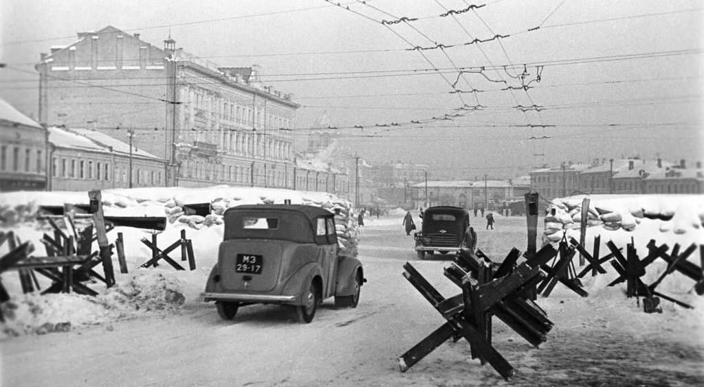
1941
Оборона Москвы занимает особое место в истории Великой Отечественной - от результата битвы за столицу СССР зависел весь дальнейший ход войны.
Оборона столицы
Битва за Москву
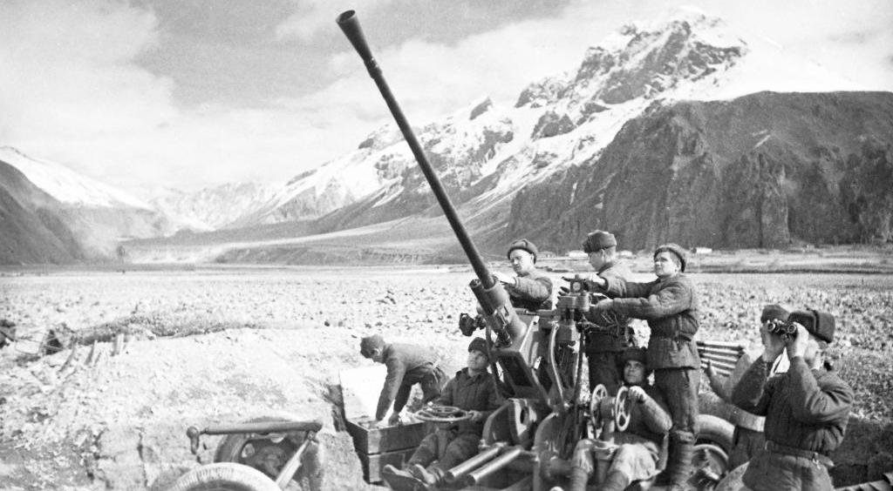
1942-1943
Битва за Кавказ имела огромное стратегическое значение - здесь решалась судьба нефтяных районов страны.
Южный фронт
Битва за Кавказ

1943
Курская битва стала последним крупным наступлением вермахта на Восточном фронте и завершилась полной победой Красной Армии.
Коренной перелом
Курская битва
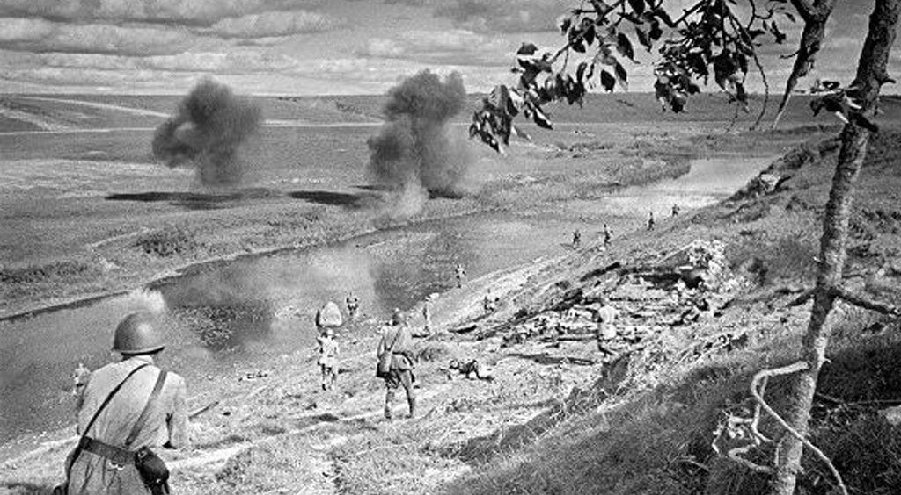
1942-1943
Ржевская битва - одна из самых кровопролитных сражений войны, где советские войска сковали значительные силы противника.
Ржевский выступ
Ржевская битва

1942-1943
Сталинградская битва стала коренным переломом в ходе Великой Отечественной войны.
Коренной перелом
Сталинградская битва
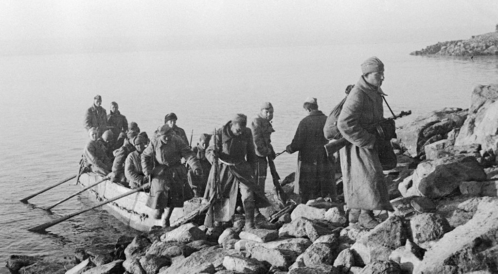
1943
Битва за Днепр - одна из крупнейших военных операций, в ходе которой была освобождена Левобережная Украина.
Освобождение Украины
Битва за Днепр
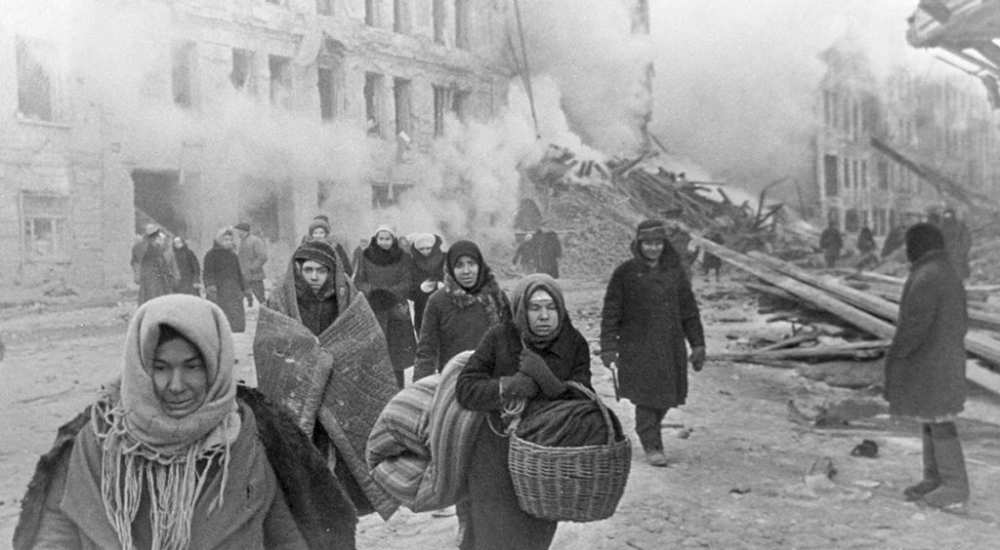
1941-1944
900 дней длилась блокада Ленинграда. Город выстоял благодаря мужеству его жителей и защитников.
Блокада
Оборона Ленинграда
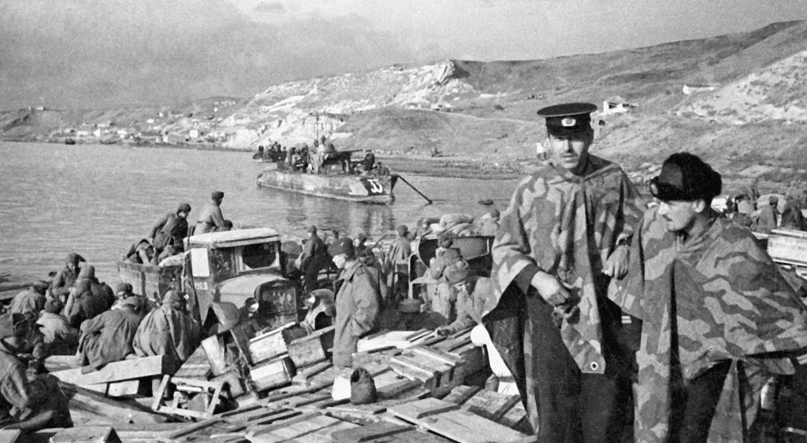
1941-1942
250 дней героической обороны Севастополя сковали значительные силы противника.
Героическая оборона
Оборона Севастополя
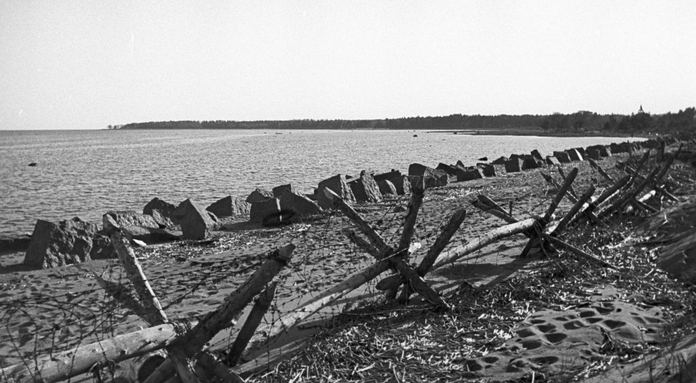
1939-1940
Советско-финская война укрепила северо-западные границы СССР накануне Великой Отечественной.
Зимняя война
Советско-финская война
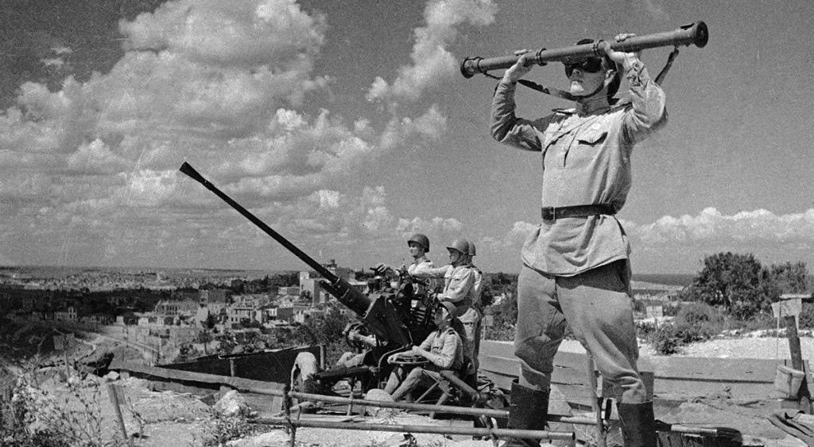
1944
Крымская наступательная операция завершилась полным освобождением Крыма от фашистских захватчиков.
Освобождение
Освобождение Крыма
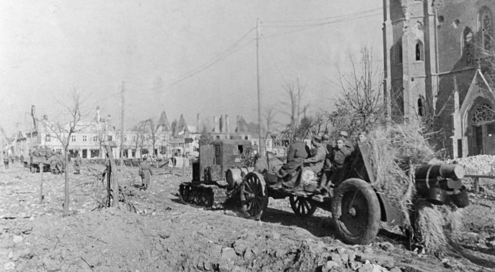
1944-1945
Будапештская операция - освобождение Венгрии от фашистской оккупации.
Венгрия
Освобождение Венгрии
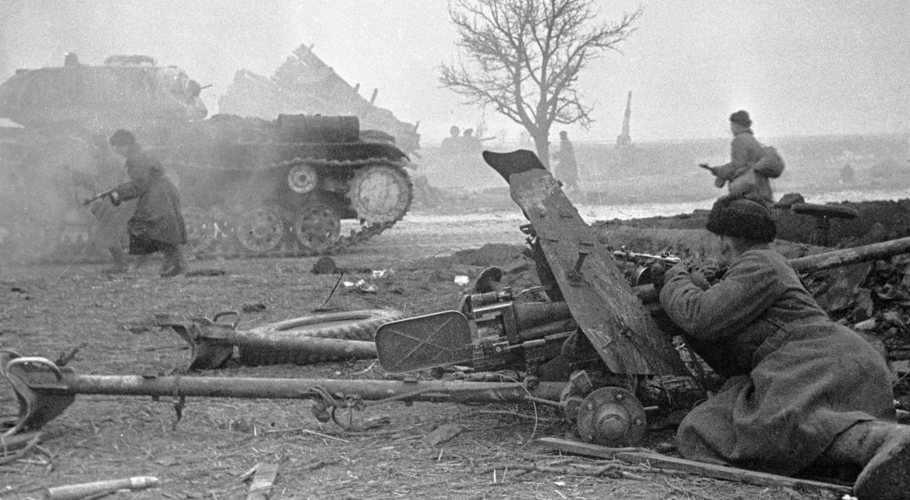
1944-1945
Висло-Одерская операция - освобождение Польши и выход к границам Германии.
Польша
Освобождение Польши
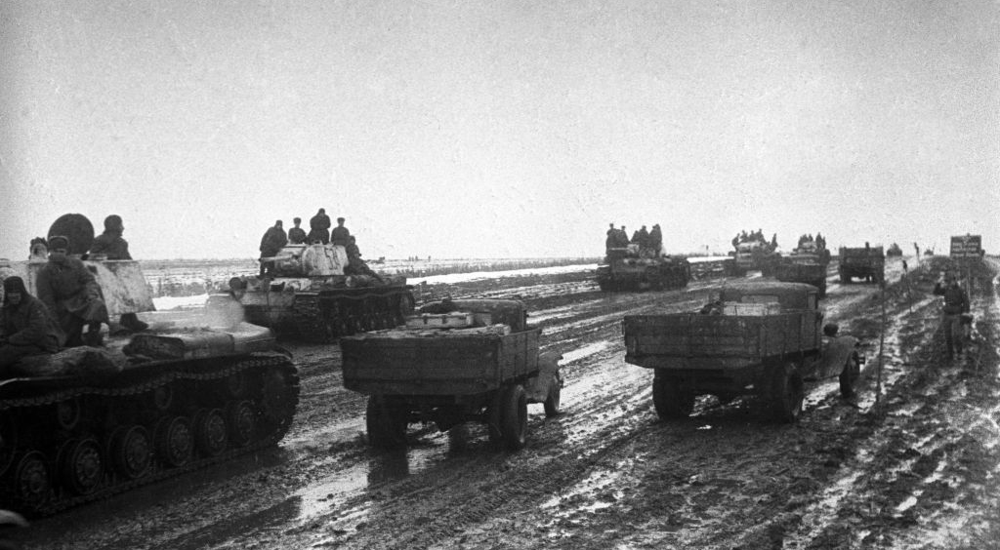
1944
Днепровско-Карпатская операция - полное освобождение Правобережной Украины.
Украина
Освобождение Правобережной Украины
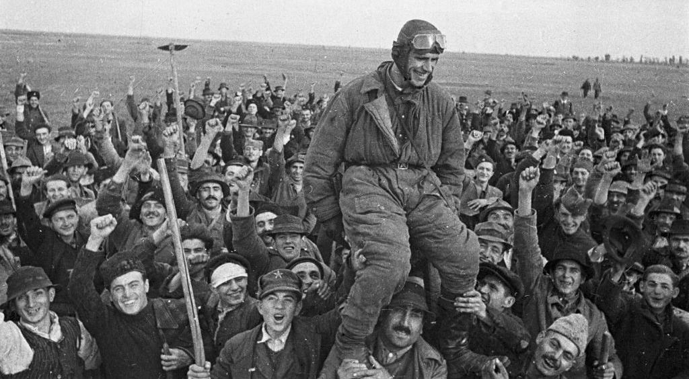
1944
Ясско-Кишиневская операция - освобождение Румынии и выход к Балканам.
Румыния
Освобождение Румынии
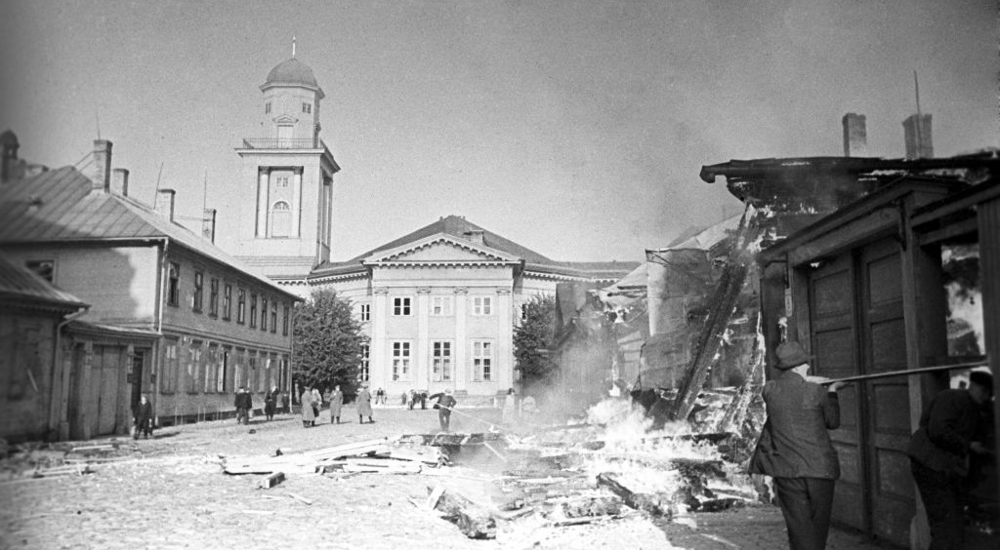
1944
Прибалтийская операция - освобождение Литвы, Латвии и Эстонии.
Прибалтика
Освобождение Прибалтики
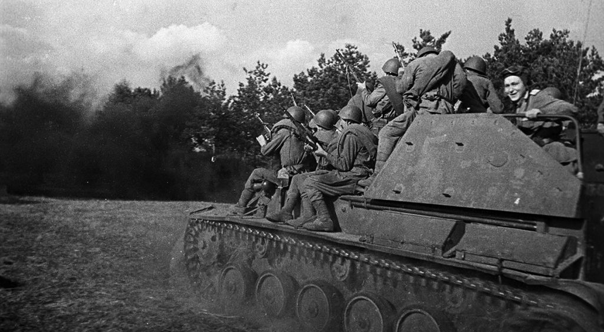
1944
Операция «Багратион» - одна из крупнейших военных операций, в результате которой была освобождена Белоруссия.
Белоруссия
Операция «Багратион»
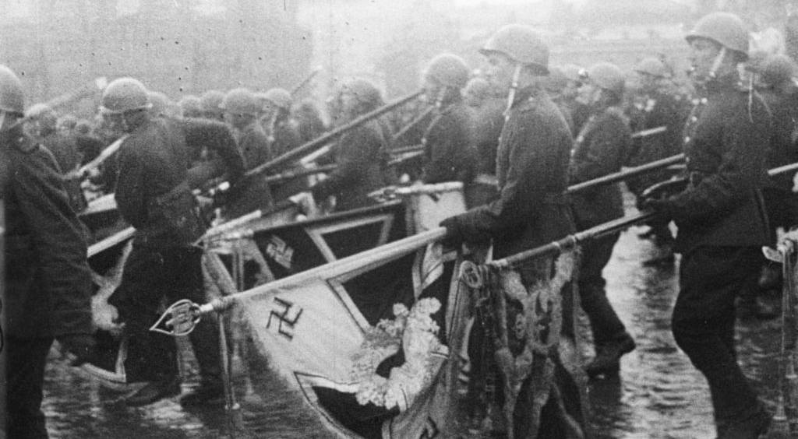
1945
9 мая 1945 года - День Победы! Великая Отечественная война завершилась полной победой советского народа.
Победа!
Итоги войны
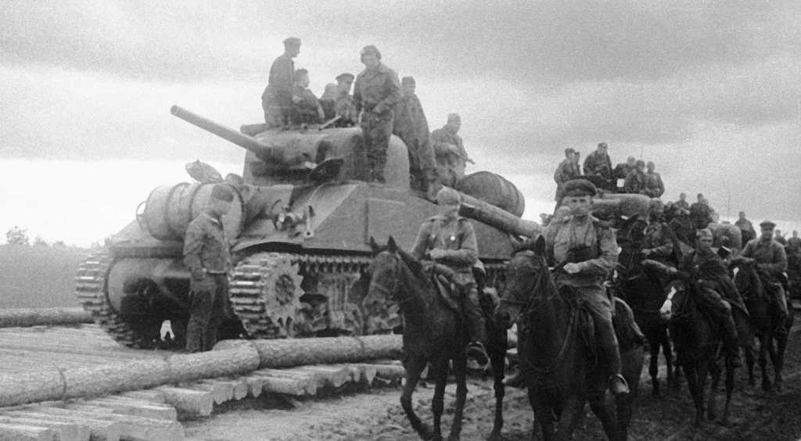
1944
Открытие второго фронта в Нормандии ускорило разгром фашистской Германии.
Нормандия
Открытие второго фронта

1945
Штурм Берлина - завершающая битва Великой Отечественной войны. Знамя Победы над Рейхстагом!
Берлин
Штурм Берлина
Нет в России семьи такой,
Где б не памятен был свой герой...
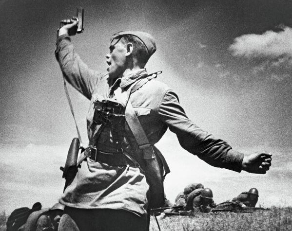
Фамилия Имя Отчество
1909-1945
Разместите здесь информацию о герое Вашей семьи, вашего учебного заведения или вашего города.
Расскажите историю Вашего деда, прадеда, бабушки и прочих родных - ветерана армии и флота, партизана, подпольщика, бойца Сопротивления, труженика тыла, узника концлагеря, блокадника, ребенка войны.
Никто не забыт! Ничто не забыто!
Города-герои
Когда в июне 1941 года фашистская Германия обрушила на нашу страну всю мощь своих армий, на их пути могучими бастионами встали советские города. Кровопролитная борьба шла буквально за каждую пядь земли на подступах к ним, за каждый квартал и за каждый дом.
Особо отличившимся городам за массово проявленные мужество и героизм их защитников впоследствии было присвоено высшее звание «Город-герой».

Москва
В агрессивных планах фашистской Германии захват Москвы имел первостепенное значение, так как именно с падением столицы связывалась полная победа немецких войск над СССР.
Узнать больше
Ленинград
Ленинград был особым городом для Советского Союза, поэтому в планах гитлеровского командования было полное уничтожение города и истребление его населения.
Узнать больше
Минск
Минск с первых дней Великой Отечественной войны оказался в самом центре трагедии. Городские части гарнизонной армии подпали в город 28 июня 1941 года.
Узнать больше